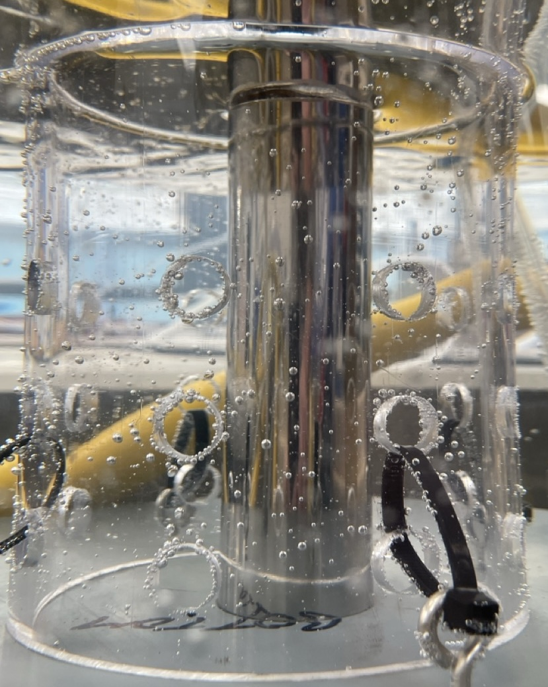
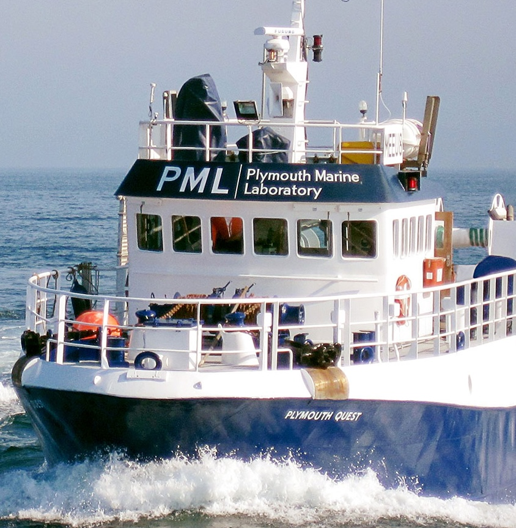

Technology and approaches
- Explore a similar but different approach (Ocean Alkalinity Enhancement), where the carbon storage potential of seawater is increased rather than carbon being taken out of the water (see further information from the main page).
- Improve on the engineering design of technology in the lab, then test at SEA LIFE.
- Increasing water flow at the site to give a better 'signal to noise' when looking at the water downstream of the plant
- Potentially undertake short-term carbon removal trials from boats away from the coast, to allow data to be generated on the response to more intensive operation.


Illustrative images. Image credits: PML.
If the work is looking promising, there may be opportunities to investigate large scale activity in the Weymouth area.